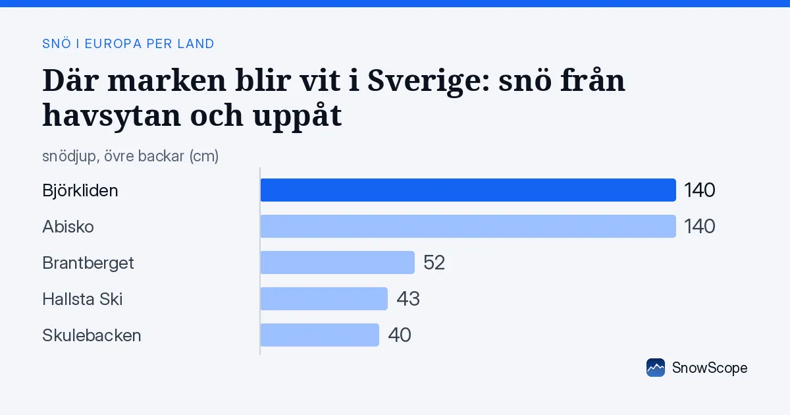

Där marken blir vit i Sverige: snö från havsytan och uppåt
Sverige väcktes till snö på varje höjd den 20 november. Från stranden till topparna visar vår modell vit mark över 90 procent av landets skidorter, med djupet som ökar kraftigt med höjden.
Se snöprognosen för Björkliden live i SnowScope-appenSnödjup, pudervarningar och 3D-kartan, gratis.
Snö börjar på noll meter
Detta är ovanligt för sent november i Sverige. Snögränsen ligger vid havsytan. När jag arbetar i Atlasbergen mäter vi när vit når lägre höjder; här har den kommit överallt på en gång. Över de 326 490 kvadratkilometer terräng vi kartlägger ligger 293 780 kvadratkilometer—90 procent—under snö den 20 november. Det är en ökning på 37 100 kvadratkilometer på sju dagar.
Det lägsta bandet, från 0 till 500 meter, har ett genomsnittligt djup på 12 cm och visar 86 procents snötäcke. Marken skiner igenom på vissa ställen i dalar och skyddade fläckar, men mönstret är tydligt: Sverige har gått in i vintern.
| Skidort | Snödjup | Nysnö, 72 h | På väg, kommande dagar | Topp |
|---|---|---|---|---|
| Björkliden | 140 cm | 3 cm | 3 cm | 933 m |
| Abisko | 140 cm | 3 cm | 2 cm | 902 m |
| Brantberget | 52 cm | 24 cm | 3 cm | 83 m |
| Hallsta Ski | 43 cm | 34 cm | 6 cm | 320 m |
| Skulebacken | 40 cm | 33 cm | 5 cm | 286 m |

Djupet fördubblas, sedan tredubblas, när du klättrar
Höjden formar snölagret i Sverige mer än någon annanstans jag iakttar. Mellan 500 och 1 000 meter ökar djupet till 16 cm och täckningen når 100 procent. Steg upp till 1 000–1 500 meter, och du hittar 42 cm—nästan tre gånger havsytans siffra. Över 1 500 meter svälls genomsnittet till 67 cm. Detta är det klassiska mönstret för ett kontinentalt vintersystem: kall luft sätter sig på högt land och håller fast vid snön som faller.
Björkliden och Abisko, båda nära 900 meter, har 140 cm mätt vid sina stationer den 20 november. Hallsta Ski och Skulebacken, lägre skidorter omkring 300 meter, ligger på 43 respektive 40 cm. Det vertikala avståndet spelar roll för ruttvalet och för förståelsen av hur mycket av varje skidort som kommer att åka bra under kommande veckor.

Nysnö över två tredjedelar av landet
Under de senaste 72 timmarna fick 204 420 kvadratkilometer 5 cm nysnö eller mer—det är två tredjedelar av det kartlagda området. Maxfallet i det fönstret var 21 cm. Bara igår gav upp till 7 cm på vissa platser. Detta var inte jämnt fördelat: Björkliden och Abisko fick endast 3 cm på tre dagar, medan Hallsta Ski fick 34 cm och Skulebacken 33 cm. Stormen matade de lägre och mellersta höjderna mer än den långt norr.
Där den bästa snön sitter nu
Björkliden leder landet med 140 cm, matchat av Abisko. Båda ligger långt norr där snö har ackumulerat stadigt genom veckan. Fem av Sveriges 75 skidorter har redan rapporterat snö; 74 av dem bär mätbar snötäcke den 20 november.
Om du söker djup och stabilitet erbjuder skidorterna långt norr den starkaste basen. Om du vill hitta nysnö på åkbar sluttning fick de centrala och södra skidorterna—Hallsta Ski, Skulebacken och Brantberget—de tyngsta senaste tillskotten och ligger på höjder där 100 procents snötäcke nu håller.
Vad som kommer härnäst
Vår modell förutspår 13 cm nysnö över Sverige under de kommande tre dagarna, med 22 november som den snörikaste dagen på omkring 5 cm. Följande vecka tillkommer 14 cm, ojämnt fördelat. Ingen enskild händelse ser extrem ut, men trenden går mot tjockare snö på alla höjder.
Norges gränsområden, modellerade separat, har redan djupare snö: Riksgränsen står på 188 cm. Finland, i öster, är torrare med 64 procents täckning, med Pyhä på endast 28 cm. Sverige ligger mellan dessa två mönster—våtare än Finland, grundare än Norges högsta mark, men nu helt vit.
Veckan i siffror
För sju dagar sedan visar 256 680 kvadratkilometer av Sverige snö. I dag gör 293 780 det. Den ökningen på 37 100 kvadratkilometer under en vecka visar ett land i övergång från höst till full vinter. Från igår till i dag växte vitmarkerna med 9 090 kvadratkilometer när nya system drog genom. Takten har varit jämn snarare än dramatisk, men riktningen är fastställd: vintern är här, och den fyller på från botten till toppen.
Tips för skidåkare
- Kontrollera lokala lavinprognoser innan du lämnar märkt terräng. Tidig-säsongs snö på branta sluttningar kan glida, särskilt där nya lager vilar på tunn äldre snö.
- Björkliden och Abisko erbjuder de djupaste, mest stabila baserna i landet just nu; skidorter under 500 meter kan fortfarande ha tunna fläckar i skyddade områden.
- Hallsta Ski och Skulebacken fick den tyngsta senaste snön; sluttningar där kan erbjuda den bästa pudern under de närmaste dagarna innan den sätter sig.
- Över 1 000 meter är all terräng vit och täckt; under 500 meter kan vissa lägre dalar fortfarande visa tunhet eller mark.
- Använd SnowScopes höjdband för att planera din väg: om du åker på 1 500 meter, förvänta dig tre gånger djupet du skulle hitta vid havsytan.
Om siffrorna
Snödjupen för skidorterna är det djupaste snötäcket på ortens övre backar enligt SnowScopes snömodell (cirka 1 km, körning från 20 november); de är uppskattningar för ett område, inte en mätning på en punkt. Stationsvärden är mätningar på det angivna datumet. Prognoser kan ändras. Läs alltid den officiella lavinprognosen innan du åker offpist.
Citera den här rapporten
För forskning, undervisning eller press: siffrorna och diagrammen får återanvändas fritt under CC BY 4.0 med den här källhänvisningen.
SnowScope (2026), Där marken blir vit i Sverige: snö från havsytan och uppåt, https://snowscope.app/blog/sv/2026/11/sweden-snow-line-20-november-2026.html, hämtad 2026-11-20
SnowScope (Atlas Labs). (2026, November 20). Där marken blir vit i Sverige: snö från havsytan och uppåt. SnowScope snow reports. https://snowscope.app/blog/sv/2026/11/sweden-snow-line-20-november-2026.html
BibTeX
@misc{snowscope2026swedensnowline20november,
author = {{SnowScope (Atlas Labs)}},
title = {Där marken blir vit i Sverige: snö från havsytan och uppåt},
year = {2026},
month = nov,
howpublished = {\url{https://snowscope.app/blog/sv/2026/11/sweden-snow-line-20-november-2026.html}},
note = {Published 2026-11-21 12:59 UTC; accessed 2026-11-20}
}· CC BY 4.0 · Metoder, data och verktyg →
Björkliden: snö och temperatur efter höjd, i vinter jämfört med förra (verktyg) →
Följ Björkliden
Gratis: ett meddelande när nysnö är på väg, och prognosen varje morgon.